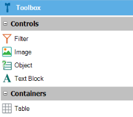

A Dashboard Layout is composed of different kind of widgets available on the toolbar. The available options are:
 FilterIts function is to filter the data in the dashboard remaining widgets. All the filters in the dashboard are global in a sense they broadcast its value to every widget in the dashboard. It's the definition of the widget that determines if a filter on the screen is accepted as a widget parameter or ignored. All filtering is done taking into account its name. So, if you have a filter name called "CustomerId"; when changing its value, all queries with a parameter matching "CustomerId" will be updated. The most important properties are:
The filters may be static or dynamic. When static, the list of possible values must be provided in the filter's definition. When dynamic, you must provide an attribute for the filter values (Item values), another one for the filter value descriptions (Item descriptions) and the set of conditions that may be necessary to navigate the database in search of the filter possible values. For example; if you have a Brand and Model filters, the condition for Model would be: MakeDsc = &MakeDsc (anywhere in the Dashboard filters are referenced with & + <FilterName>). ImageInserts a standard Image object on the layout. ObjectDisplays a selector to choose a Query object or Data Provider object. The main properties are:
TextBlockInserts a reduced version of a Text Block control. The main properties are:
The properties include the caption of the text and it may reference any filter in the dashboard, for example, "List of &CustomerName orders:" TableInserts a reduced version of a Table control to organize and position other widgets. Standard VariablesThe following standard variables are supported |